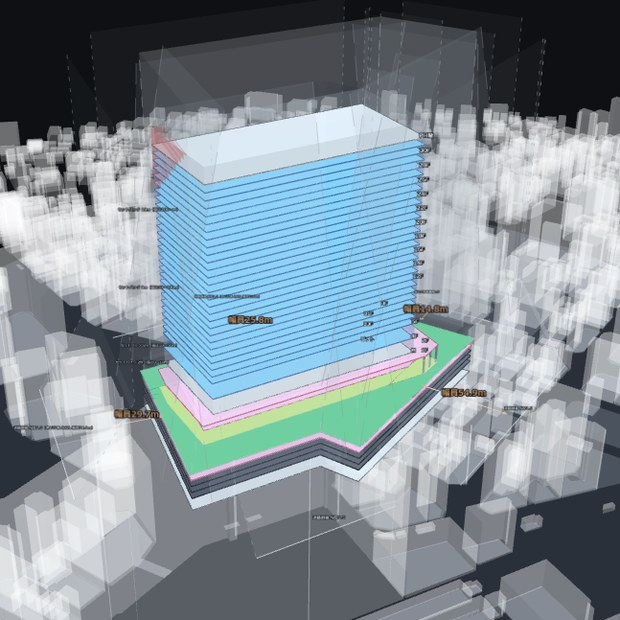
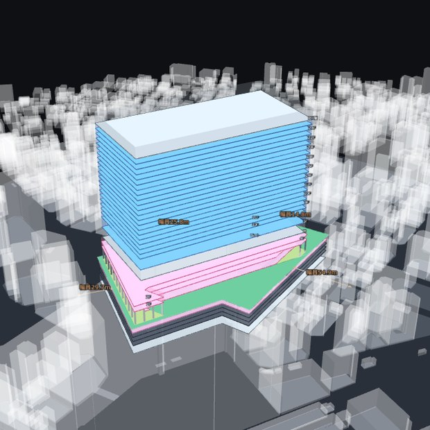
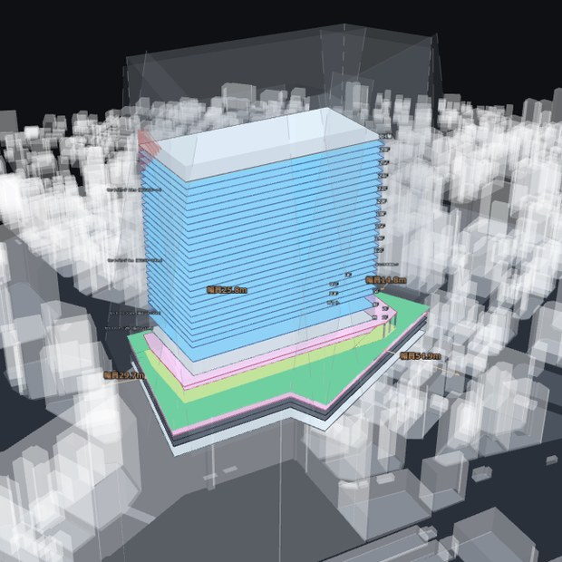
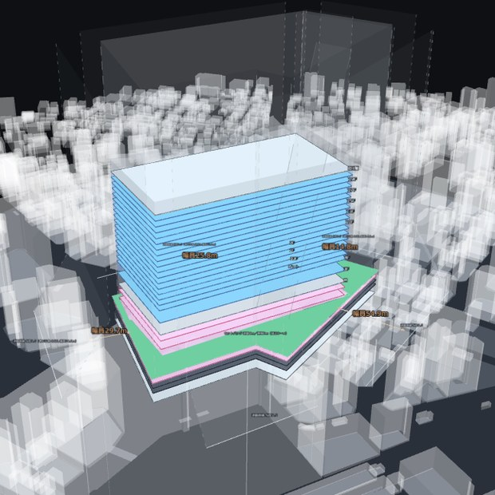
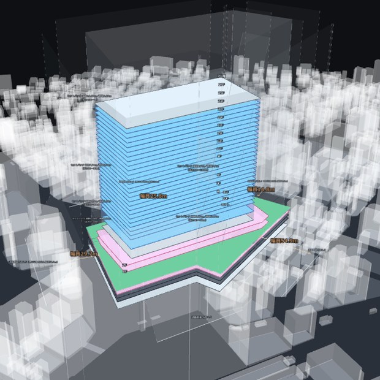
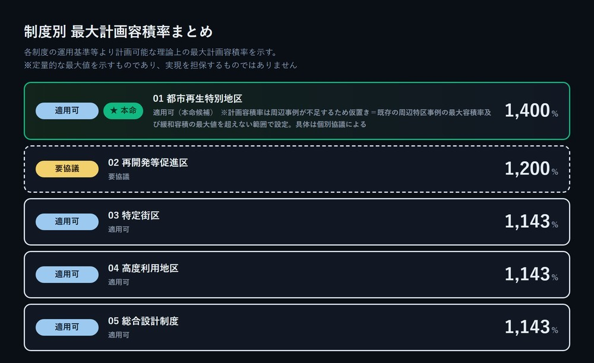

再開発等促進区
1,200%
最高部 163.1m






都市開発諸制度（特定街区・高度利用地区・再開発等促進区・総合設計制度）と都市再生特別地区について、「この敷地でどの制度を使うと、どこまで容積を積めて、どんな建物の形になるか」をブラウザ上で自動試算するシミュレーション基盤を構築しました。利用者が地図上で敷地を囲むと、公的オープンデータから用途地域・指定容積率・前面道路幅員などの敷地条件を自動で読み取り、制度ごとの計画容積率・配棟・基準階・3Dボリュームを一括で生成します。
従来、この「候補地の当たり付け」は設計事務所へのボリュームスタディ外注に依存しており、1案を得るのに数週間単位の待ち時間が発生していました。しかも初期段階で複数の制度を並行して出してもらうことは現実的でなく、多くの場合は経験則で制度を1つに絞り込んでから検討が始まります。本ユースケースは、その外注の前段にある一次スクリーニングを機械化するものです。
| 対象業界 | 不動産開発（デベロッパー）、建設、建築設計、都市開発、用地取得 |
|---|---|
| 導入技術 | Webブラウザ完結のGIS／自動ボリューム生成エンジン／公的オープンデータ（都市計画GIS・PLATEAU・国土地理院ベクトルタイル 等） |
| 現状の課題 | 複数の敷地・複数の制度パターンを同時に検討する手段がなく、初期スクリーニングの段階から外部委託の待ち時間が発生する |
| 得られた成果 | 敷地トレースから制度別の容積率・ボリューム・提案資料までを数分で自動生成。大手デベロッパーにてβトライアルを実施中 |
ひとつは「同時検討ができない」こと。都市開発諸制度は複数あり、どの制度を選ぶかで積める容積も建物の形も変わります。しかし複数の敷地、複数の制度パターンを同じ土俵に並べて比べる手段がなく、比較そのものが事業の初動から抜け落ちていました。
もうひとつは「初期スクリーニングが重い」こと。候補地を絞り込む段階でも、専門家に条件を渡して成果物を待つ工程が挟まります。結果として、最終的に見送る候補地にも本番と同じ手間がかかっていました。
本ユースケースは、以下のような立場の方に適しています。
適用領域は東京都心13区（千代田・中央・港・新宿・文京・墨田・江東・品川・目黒・渋谷・中野・豊島・北）です。オフィス系のボリューム検討を前提としています。
本ユースケースの革新性は、都市開発諸制度の運用基準という「専門家が読み解くもの」を、地図上で敷地を囲むという単一の操作に接続した点にあります。CADも都市計画図の読解も要求せず、利用者が行うのは「敷地を描く」「道路に合わせる」「計算する」の3ステップのみです。敷地を囲めば、用途地域・指定容積率・建蔽率・前面道路幅員・高度地区などは公的オープンデータから自動で読み取られ、敷地カルテとして提示されます。
計算を実行すると、5つの制度それぞれについて計画容積率・容積緩和の内訳・配棟・基準階・3Dボリュームが生成されます。配棟と基準階は用意された型の中から比較する仕組みで、制度ごとに最も合理的な案が本命として選ばれます。冒頭に掲げた5枚の3Dは、いずれもこの工程で自動生成されたものです。
また、機械が扱える範囲を明確に区切っています。対応範囲の外にある敷地に対しては、誤った数値を出さないために計算そのものを実行前に停止します。用途地域が読み取れない場所（水面・公園・道路の上など）でも同様です。
検討結果は、全制度を並べた総覧版と、本命案の概要版として出力できます。案件名・敷地概要・計画規模・3Dボリューム・敷地図・配棟イメージ・基準階イメージに加え、免責・出典・データ基準日が同一紙面に入った形式で、社内会議の資料としてそのまま持ち込めます。
一次スクリーニングが数分で回るようになることで、初期検討のあり方そのものが変わります。1案を待つのではなく複数制度を並べて比べる、1敷地を精査するのではなく候補地群をふるいにかける——つまり、これまで時間的制約で断念されていた検討の作法が成立します。設計事務所の専門性は、ふるいを通過した敷地に集中して投下されることになります。
今後は、対象エリアの拡大、オフィス以外の用途（ホテル・住宅）への対応、個別協議の結果を利用者側でパラメータとして反映できる仕組み、形態規制の取り込みを順次進めていきます。
また本シミュレーションは、PROVIDENCEが持つ都市デジタルツイン基盤との接続によって、企画段階のボリューム検討から、周辺環境を含めた可視化・合意形成・その後の運用シミュレーションまでを、同一の空間データ上で連続させることを見据えています。都市開発の「最初の一手」を、デジタルツインの入口として位置づけることが本ユースケースの狙いです。
機能詳細や、あなたのチームへのベストなプランをプロフェッショナルに相談することが可能です。お気軽にお問い合わせください。
CONTACT